O sistema tem duas partes. O site do cliente é onde as pessoas reservam, em francês, português ou inglês. O painel (/admin) é onde a equipe acompanha o dia, registra chegadas e cuida das reservas. As duas partes usam os mesmos dados: uma reserva feita no site aparece no painel em poucos segundos, em todos os aparelhos.
Durante o serviço, estas cinco coisas resolvem quase tudo:
Abrir a Visão geralEntre no painel com a senha da equipe. A primeira tela mostra o dia: reservas, pessoas esperadas, quem já está no salão e quantos lugares estão livres.
Conferir as próximas chegadasA lista Próximas chegadas mostra quem chega, a que horas, quantas pessoas e se está atrasado.
Registrar a chegadaQuando o grupo senta, toque em Registrar chegada. A reserva passa a Cliente presente.
Concluir o atendimentoQuando o grupo vai embora, toque em Concluir atendimento. Os lugares ficam 10 minutos em arrumação e depois voltam a ficar livres.
Olhar os alertasO quadro Alertas avisa quem está atrasado, quem passou da tolerância e onde a casa pode lotar.
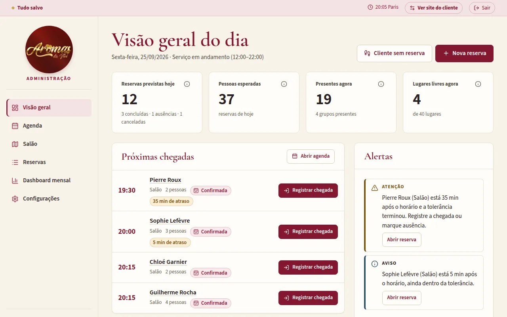
A Visão geral numa sexta-feira às 20:05. As imagens deste manual usam dados de exemplo com nomes fictícios.
Situações do dia a dia
Procure a situação e siga os passos. Cada item leva ao passo a passo completo mais abaixo.
Toque em Cliente sem reserva (Visão geral ou Salão).
Toque em Agora (presencial) para preencher a data e o horário de agora.
Informe Pessoas e um nome (pode ser só o primeiro nome) e toque em Criar reserva.
Na reserva que abre, toque em Registrar chegada.
Se aparecer “Não há mesa livre nem lugares suficientes para esse grupo nesse horário”, a área está cheia até o grupo terminar. Veja Casa cheia.
Cliente atrasou
Até 15 minutos depois do horário, o painel mostra “5 min de atraso” e um aviso azul nos alertas. É só esperar.
Depois de 15 minutos, o alerta fica amarelo: “a tolerância terminou. Registre a chegada ou marque ausência.”
Se o cliente chegar, toque em Registrar chegada normalmente.
Se não vier, abra a reserva e toque em Marcar ausência. Os lugares voltam a ficar livres.
O sistema nunca marca ausência sozinho. Se ninguém mexer, a reserva continua ocupando os lugares.
Grupo com mais de 8 pessoas
No site, quem escolhe Mais de 8 vê o WhatsApp do restaurante (+33 7 71 85 74 03) e não consegue reservar online.
Combine tudo com o cliente pelo WhatsApp.
No painel, crie a reserva com Nova reserva e o número real de pessoas. Pela equipe, o limite é a capacidade da área (30 no Salão).
Na Observação, anote o combinado (ex.: “Menu fechado, chegam às 19h30”).
Um grupo grande ocupa boa parte do Salão por 1h40. Confira antes a linha Lotação na Agenda.
Cliente quer mudar o horário, o dia ou o número de pessoas
Em Reservas, busque pelo nome, código ou e-mail e toque em Detalhes.
Toque em Editar, mude o que for preciso e toque em Salvar alterações.
Se a reserva tem e-mail, o cliente recebe o e-mail de Alteração no idioma dele.
O cliente não consegue mudar sozinho pelo site: o site pede que ele fale com o restaurante.
Cliente quer cancelar
Pelo site: até 2 horas antes, o próprio cliente cancela em Consultar reserva, com o código e o e-mail. O horário é liberado na hora.
Pela equipe: abra a reserva, toque em Cancelar reserva e escreva a Justificativa (obrigatória). O cliente recebe o e-mail de cancelamento; a justificativa é interna e nunca vai no e-mail.
Choveu: fechar o terraço
Vá em Salão e, no cartão do Terraço, toque em Bloquear esta área. Ou vá direto em Configurações → Bloqueios manuais.
Escolha Área: Terraço, a data e as horas de início e fim, e escreva o Motivo (ex.: “Chuva”).
Toque em Criar bloqueio. O site deixa de oferecer o terraço nesse período.
Parou de chover? Toque no bloqueio (na Agenda ou na lista de bloqueios) e em Encerrar agora.
Se já houver reservas no terraço nesse período, o bloqueio é recusado com a lista delas. Mude essas reservas para o Salão com Mudar de área e tente de novo.
O restaurante vai fechar (férias, feriado, evento)
Configurações → Fechamentos e datas especiais → Fechar dias.
Preencha De e Até (inclusive). Para um dia só, use a mesma data nos dois.
Em Motivo (interno) escreva, por exemplo, “Férias”. Só a equipe vê.
Se quiser, escreva a mensagem aos clientes em francês, português e inglês.
Toque em Fechar dias. O site para de aceitar reservas e mostra um aviso com a data de reabertura.
Se houver reservas nesses dias, o sistema mostra a lista com telefone e e-mail de cada cliente antes de fechar. Feriados franceses aparecem logo abaixo, com o botão Fechar este dia.
Casa cheia
O sistema controla quantas pessoas estão ao mesmo tempo em cada área: até 30 no Salão e 10 no Terraço. Quando a soma chega ao limite em algum momento da 1h40 do grupo, o horário some do site e a Nova reserva do painel recusa.
Ofereça outro horário: a Agenda mostra na linha Lotação quantas pessoas estão previstas em cada horário.
Se o Terraço estiver aberto e com lugar, escolha Área: Terraço na reserva.
Se alguém cancelar ou for marcado como ausência, os lugares voltam na hora.
A mesa liberou antes do previsto
Toque em Concluir atendimento assim que o grupo sair. Os lugares entram em arrumação (10 min).
Mesa já arrumada? Toque em Concluir preparação e depois em Liberar lugares agora. Os lugares ficam livres na hora e podem ir para o site.
O cliente diz que o e-mail não chegou
Peça que confira a caixa de spam ou “promoções”.
Abra a reserva em Detalhes e veja o quadro E-mails ao cliente: Enviado, Na fila, Falhou ou Não enviado.
Confira se o e-mail foi escrito certo. Se estiver errado, corrija em Editar.
Em qualquer caso, o código e os dados estão nos detalhes: passe ao cliente por telefone ou WhatsApp.
Esqueci a senha / quero trocar a senha
A senha da equipe é a mesma para todos e fica guardada no servidor (Railway). Não dá para trocar pelo painel.
Esqueceu? Peça ao Kevin.
Quer trocar (por exemplo, quando alguém sai da equipe)? Peça ao Kevin: ele troca no Railway e pode encerrar as sessões abertas em todos os aparelhos.
Depois de 10 tentativas erradas em 15 minutos, o login fica bloqueado por 15 minutos.
A internet caiu
O painel continua funcionando na tela e guarda as ações. No topo aparece: “Sem conexão: as últimas alterações ainda não foram salvas. Não feche esta página; tentaremos de novo automaticamente.”
Não feche nem recarregue a página até voltar a aparecer Tudo salvo no canto superior.
Quando a internet volta, tudo é enviado sozinho.
Enquanto estiver sem internet, o site dos clientes não vê as mudanças feitas nesse aparelho.
Ver como foi o mês
Abra Dashboard mensal. Use as setas ou a lista para escolher o mês. Veja reservas recebidas, pessoas atendidas, cancelamentos, ausências e os dias e horários mais procurados. Detalhes.
Lista de clientes que aceitam novidades
Em Reservas, escolha Período: Todas.
Toque em Exportar CSV. O arquivo abre no Excel, Numbers ou Google Planilhas.
Filtre a coluna Aceita novidades por Sim. Use só esses e-mails para newsletter ou convites.
O sistema não envia e-mails de novidades. Ele só guarda quem aceitou e quando (prova do consentimento, exigida pelo RGPD).
Site do cliente
É o que o cliente vê em reservas-aromasdavivi.up.railway.app. Vale conhecer bem para ajudar quem liga com dúvida.
Página inicial
Para que serve
Apresenta o restaurante, os horários, as regras de reserva e os contatos, e leva à reserva.
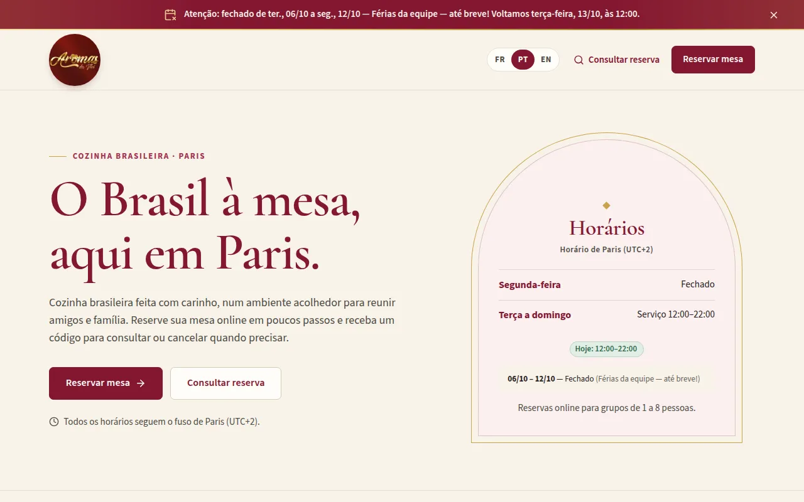
O topo da página inicial. A faixa bordô no alto é o aviso de fechamento (aparece até 14 dias antes).
O que aparece
Aviso do restaurante: quando há um fechamento próximo, com a mensagem escrita pela equipe e a data de reabertura. O cliente pode fechar o aviso no ×.
Horários: Segunda-feira fechado; Terça a domingo, Serviço 12:00–22:00; “Hoje: 12:00–22:00”; fechamentos futuros; limite de 1 a 8 pessoas online.
Bom saber: janela de 60 dias, antecedência de 30 minutos, cancelamento online até 2 h antes.
Grupos maiores: WhatsApp, endereço e Instagram.
Rodapé: os mesmos contatos e a troca de idioma.
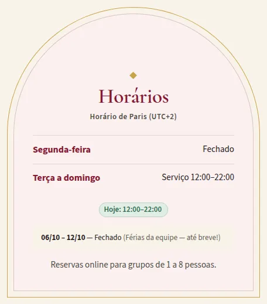
Cartão Horários.
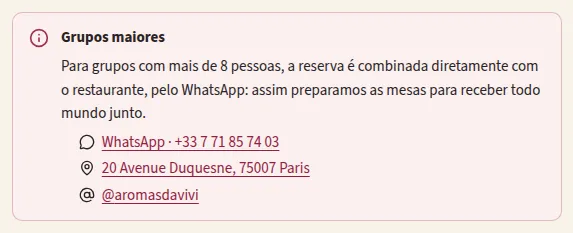
Quadro Grupos maiores.
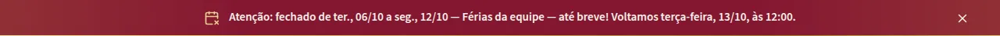
Aviso de fechamento gerado a partir de Fechar dias.
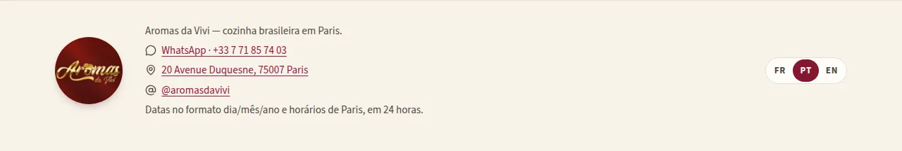
Rodapé com os contatos.
Idiomas FR · PT · EN
Para que serve
O site abre no idioma do navegador do cliente. Ele pode trocar a qualquer momento nos botões FR, PT e EN, no topo ou no rodapé.
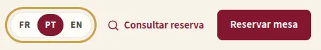
Troca de idioma, ao lado de Consultar reserva e Reservar mesa.
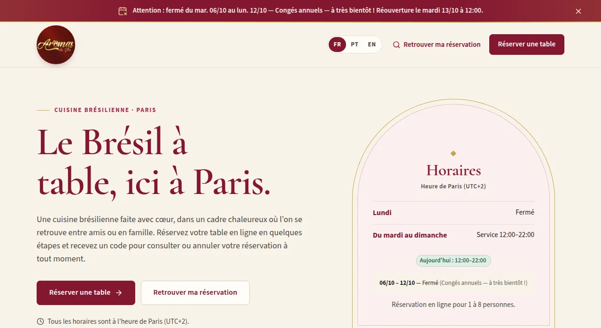
Em francês: Réserver une table, Retrouver ma réservation.
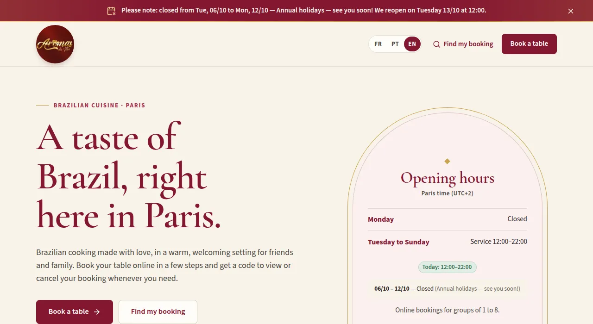
Em inglês.
Importante: os e-mails ao cliente saem no idioma em que ele reservou. Reservas criadas pela equipe saem em francês.
Reserva em 4 etapas
Para que serve
O cliente reserva sozinho em menos de um minuto. O site só mostra horários com lugar para o grupo inteiro.
Etapa 1 · Data e pessoas
O cliente toca em Reservar mesa e escolhe Quantas pessoas? (1 a 8).
No calendário, escolhe a data. A legenda explica as cores: Com horários, Sem horários para o grupo e Fechado ou fora da janela (dia riscado).
Toca em Continuar.
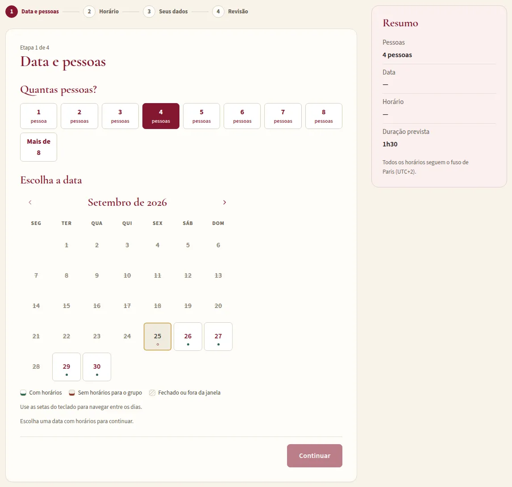
Etapa 1. O resumo à direita acompanha as escolhas.
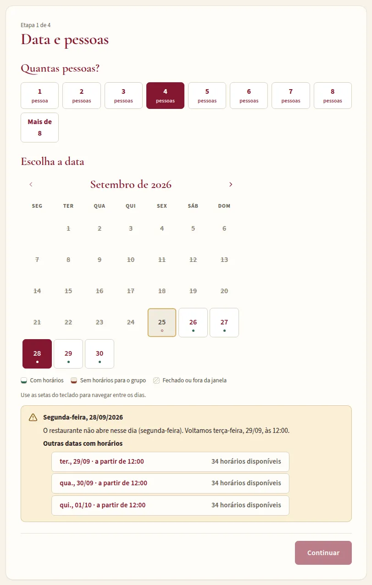
Dia fechado: o site explica e sugere as próximas datas com horários.
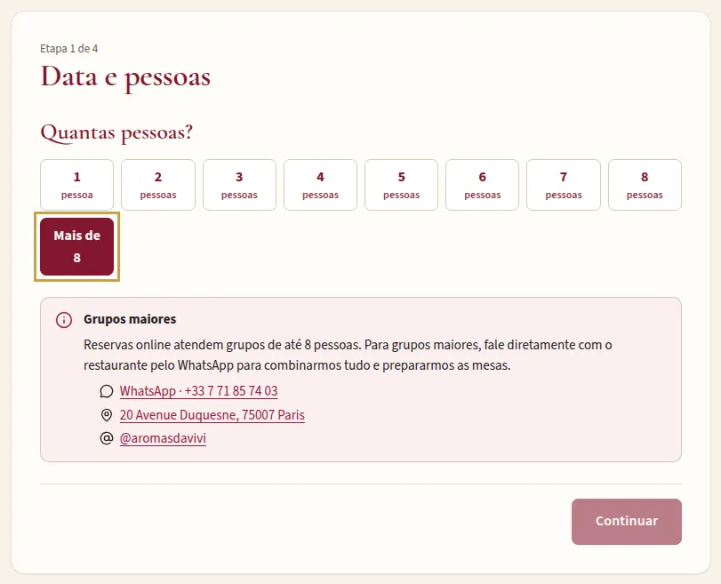
Mais de 8: o site mostra o WhatsApp e não deixa continuar.
Etapa 2 · Horário
Aparecem os horários de 15 em 15 minutos, das 12:00 às 20:15, só os que têm lugar. O cliente escolhe e toca em Continuar.
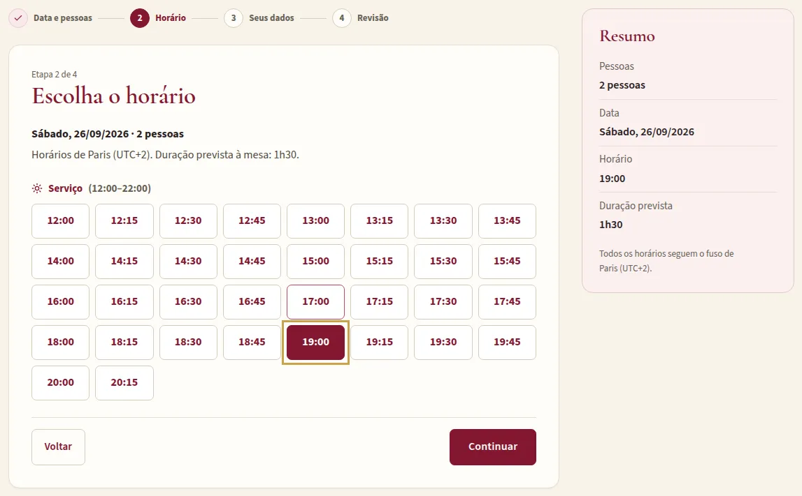
Etapa 2. A última opção é 20:15, porque 1h30 de atendimento + 10 min de arrumação precisam terminar até 22:00.
Etapa 3 · Seus dados
Nome completo, E-mail e Telefone são obrigatórios. O telefone é obrigatório no site por uma regra que a equipe controla (Telefone obrigatório nas reservas online).
Observação é opcional, até 300 caracteres (ex.: aniversário, cadeirinha para bebê).
A caixa Quero receber novidades e eventos do Aromas da Vivi por e-mail vem desmarcada. Só marca quem quer.
Abaixo, uma linha explica o uso dos dados e indica o WhatsApp para pedir a exclusão.
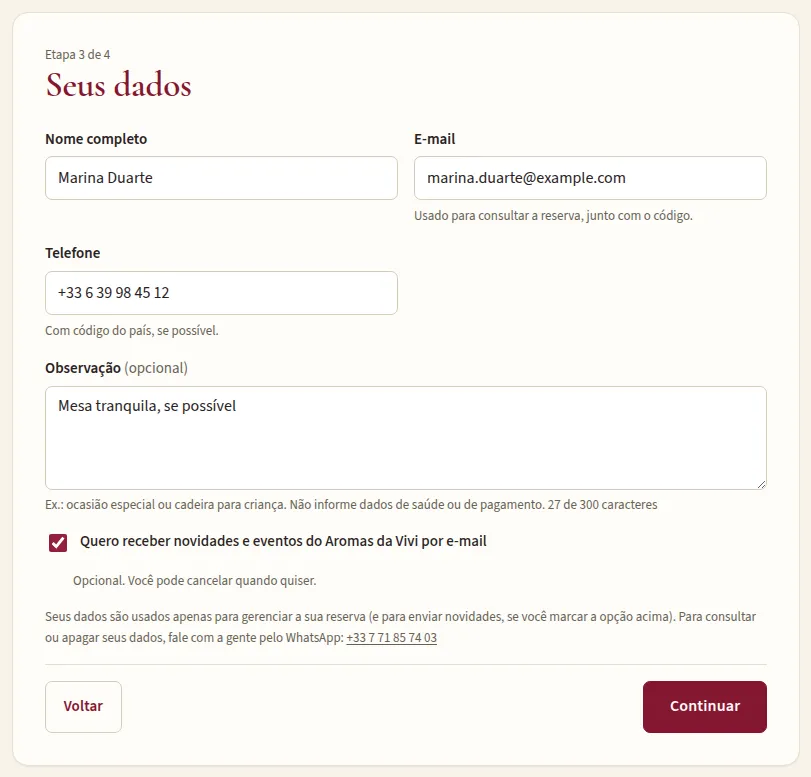
Etapa 3, com a caixa de novidades marcada pela cliente.
Etapa 4 · Revisão
O cliente confere tudo, pode Alterar qualquer linha e toca em Confirmar reserva. A página lembra a tolerância de 15 minutos e o prazo de cancelamento.
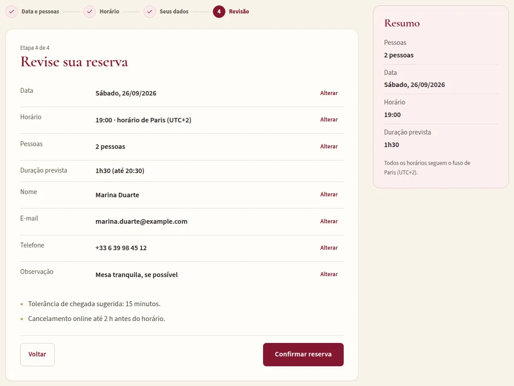
Etapa 4.
Exemplo
Marina quer jantar no sábado com uma amiga. Ela escolhe 2 pessoas, sábado 26/09, 19:00, preenche os dados, marca “novidades” e confirma. No painel, a reserva aparece no Salão, com origem Online, em poucos segundos.
Confirmação
Para que serve
Mostra o Código da reserva (formato XXXX-XXXX), com o botão Copiar código, o resumo e a frase “Enviamos a confirmação para … Se não encontrar, confira a caixa de spam.”
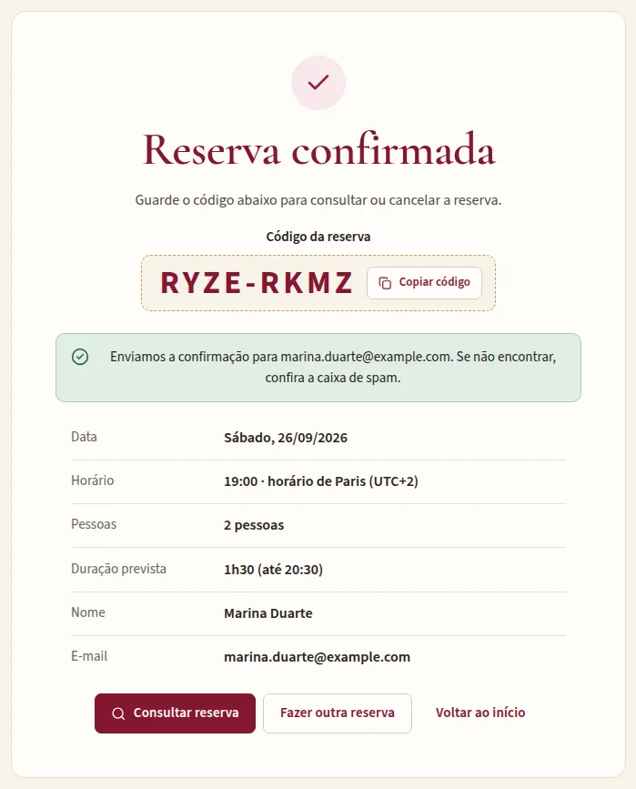
Tela de confirmação.
Consultar e cancelar
Para que serve
O cliente vê a própria reserva e, até 2 horas antes, cancela sozinho. O link do e-mail de confirmação já abre esta página preenchida.
Como usar (cliente)
Toca em Consultar reserva, digita o Código da reserva e o E-mail e toca em Consultar.
Vê Sua reserva com a situação (Confirmada, Cancelada…).
Para cancelar, toca em Cancelar reserva e confirma em Sim, cancelar.
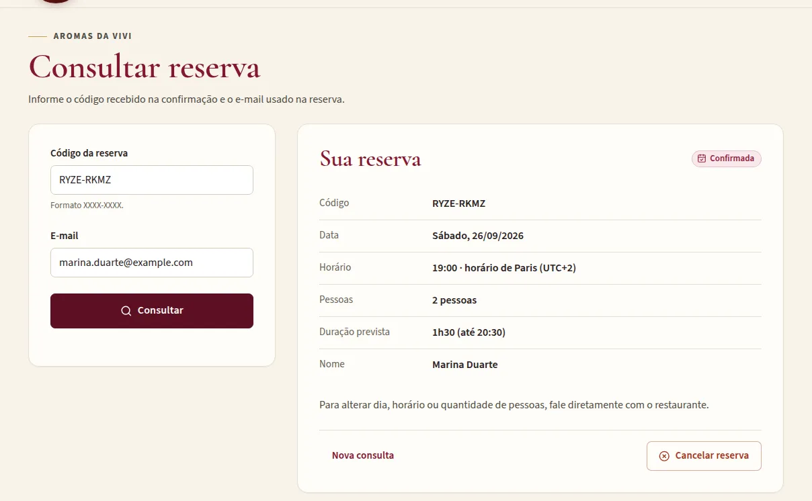
Resultado da consulta.
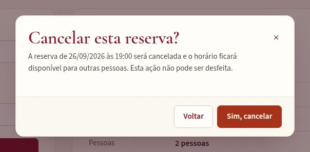
Pedido de confirmação antes de cancelar.
Menos de 2 horas antes, o site não deixa cancelar e pede que o cliente fale com o restaurante. Nesse caso, a equipe cancela pelo painel.
No celular
A maioria dos clientes reserva pelo celular. O site se adapta: o menu vira ícones e os horários ficam em botões grandes.
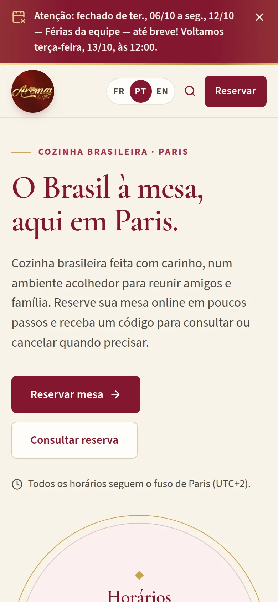
Início.
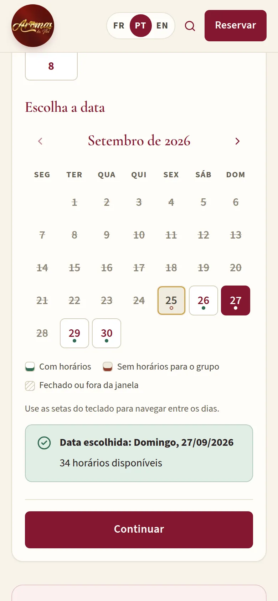
Etapa 1.
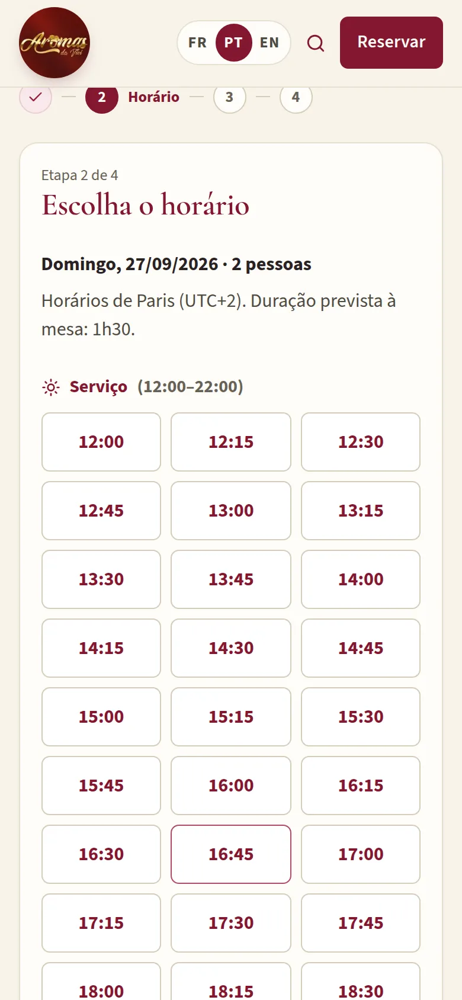
Etapa 2.
Painel da equipe
Endereço: reservas-aromasdavivi.up.railway.app/admin. Funciona no computador, no tablet e no celular. O menu tem seis telas: Visão geral, Agenda, Salão, Reservas, Dashboard mensal e Configurações. Todos os horários são de Paris.
Entrar e sair
Para que serve
Só quem tem a senha da equipe vê nomes, telefones e e-mails dos clientes.
Como usar
Abra /admin, digite a senha da equipe em Senha e toque em Entrar.
A sessão dura 12 horas. Depois disso, o painel pede a senha de novo e envia o que estava pendente.
Para sair, toque em Sair no canto superior direito. Faça isso sempre em aparelhos que não são do restaurante.
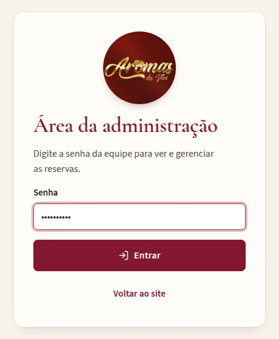
Tela de entrada.
Barra do topo: Tudo salvo (situação do salvamento), relógio de Paris, Ver site do cliente e Sair.
Visão geral
Para que serve
O resumo do dia, para deixar aberto durante o serviço. Atualiza sozinho.
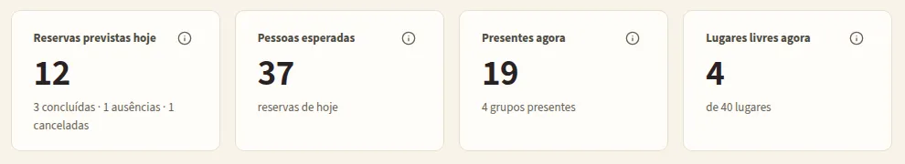
Os quatro cartões do dia. O i de cada cartão explica a conta.
O que cada parte mostra
Reservas previstas hoje: todas do dia, menos as canceladas (com o número de concluídas, ausências e canceladas).
Pessoas esperadas: soma das pessoas do dia, sem canceladas nem ausências.
Presentes agora: pessoas com chegada registrada que ainda não foram concluídas.
Lugares livres agora: lugares sem cliente, sem reserva em andamento, sem arrumação e sem bloqueio.
Próximas chegadas: quem ainda vai chegar, com o botão Registrar chegada e a etiqueta de atraso.
Alertas: atrasos, tolerância vencida, clientes além do horário e risco de lotação.
Salão agora: barra de lotação de cada área. Listras cinzas indicam área bloqueada.
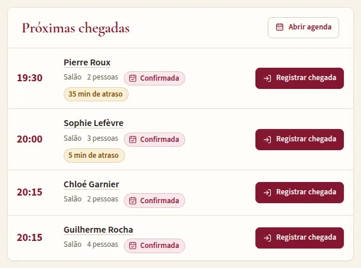
Próximas chegadas.
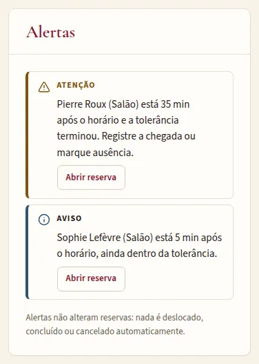
Alertas: amarelo é “Atenção”, azul é “Aviso”.
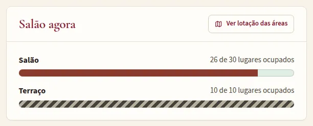
Salão agora: 26 de 30 no Salão; o Terraço está bloqueado (chuva) e por isso aparece cheio.
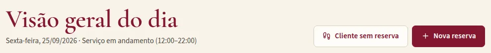
Os atalhos Cliente sem reserva e Nova reserva.
Exemplo
São 20:05. Sophie (20:00) está 5 minutos atrasada: aviso azul, é só esperar. Pierre (19:30) passou da tolerância: alerta amarelo. A equipe liga para ele; se não vier, abre a reserva e marca ausência, e os 2 lugares voltam para o Salão.
Agenda
Para que serve
Mostra o dia inteiro por área, das 12:00 às 22:00: quem vem, quanto tempo fica e quantas pessoas estarão no salão em cada horário.
Como usar
Em Dia, use as setas, digite a data ou toque em Hoje.
Em Visualização, escolha Linha do tempo (barras) ou Lista.
Use Área e os botões de Situação para filtrar (ex.: esconder as Cancelada). Turno pode ficar em Todos: o restaurante usa um serviço contínuo.
Toque numa barra para abrir a reserva. Toque num bloqueio para ver ou encerrar.
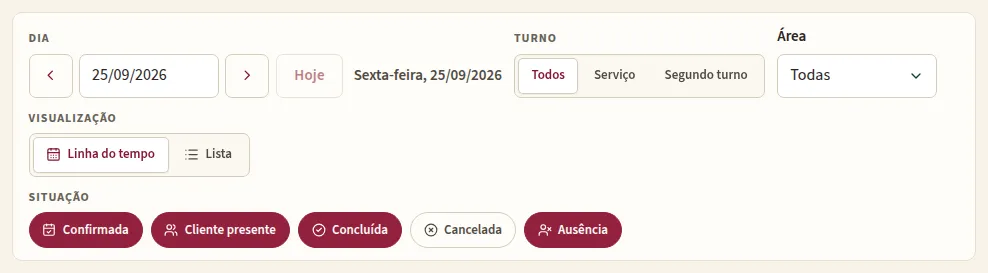
Filtros.
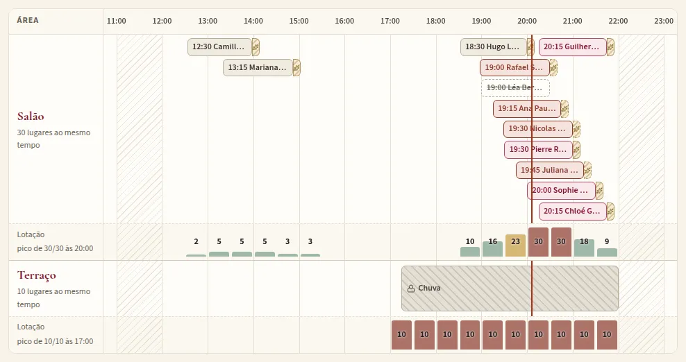
Linha do tempo. Cada barra é uma reserva; o pedacinho listrado no fim é a arrumação. A linha vermelha é “agora”. A linha Lotação mostra quantas pessoas estão previstas em cada meia hora: verde tem folga, dourado está perto do limite, bordô está cheio.
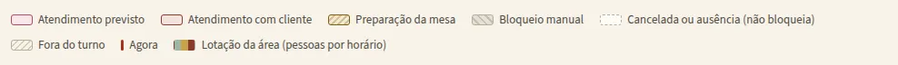
Legenda: tracejado claro é reserva cancelada ou ausência, que não ocupa lugar.
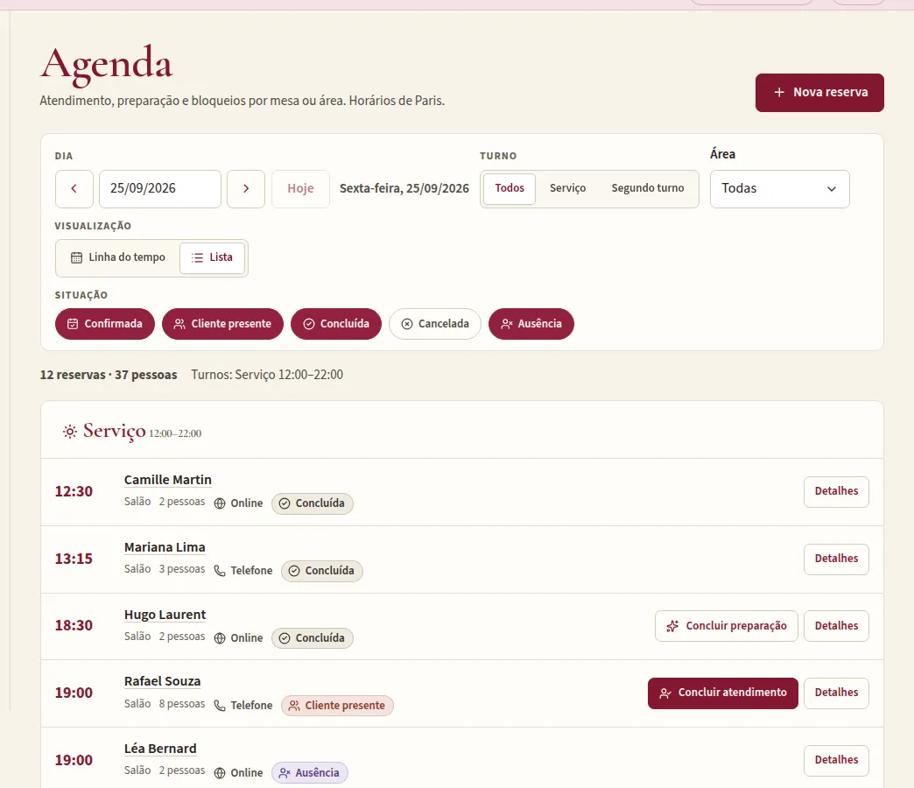
Visualização em Lista, com os botões de ação de cada reserva.
Exemplo
Um cliente liga às 17h perguntando se há lugar para 6 às 20:00. Na linha Lotação aparece 30 às 20:00: está cheio. Às 21:00 aparece 18. A equipe oferece 21:00.
Salão
Para que serve
Mostra, área por área, quem está sentado, quem deveria ter chegado, quais lugares estão em arrumação e quem chega na próxima hora. Com Previsão, mostra como estará num dia e horário futuros.
Como usar
Em Consulta, deixe Agora para a situação real. Cada cartão mostra “26 de 30 lugares ocupados” e uma barra: presentes, aguardando chegada e em preparação.
Os botões de cada nome fazem a ação direto: Registrar chegada, Concluir atendimento, Concluir preparação.
No pé de cada cartão: Cliente sem reserva e Bloquear esta área.
Para planejar, escolha Previsão, a Data da previsão e o Horário.
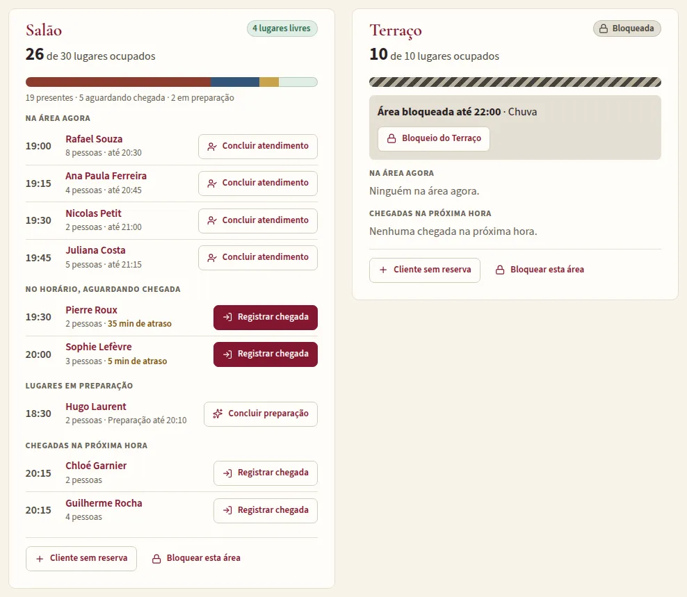
Modo Agora. O Terraço mostra Área bloqueada até 22:00 · Chuva.
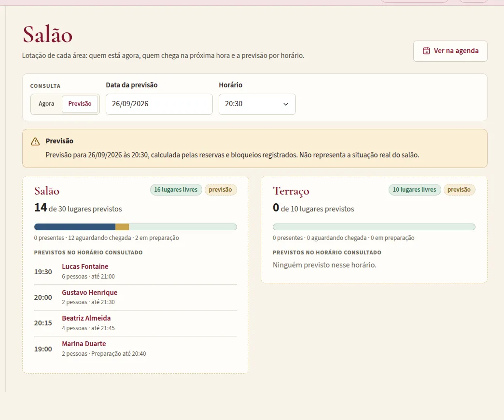
Modo Previsão: sábado às 20:30, 14 lugares previstos no Salão.
Reservas
Para que serve
Encontrar qualquer reserva, passada ou futura, e exportar a lista.
Como usar
Em Buscar, digite nome, código ou e-mail.
Em Período: Hoje, Próximos 7 dias, Este mês, Mês passado, Futuras, Passadas, Todas ou Personalizado (De / Até).
Filtre por Origem (Online, Telefone, Presencial) e pelos botões de Situação. Limpar filtros volta ao início.
Toque em Detalhes para abrir a reserva.
Exportar CSV baixa exatamente a lista filtrada, para abrir numa planilha.
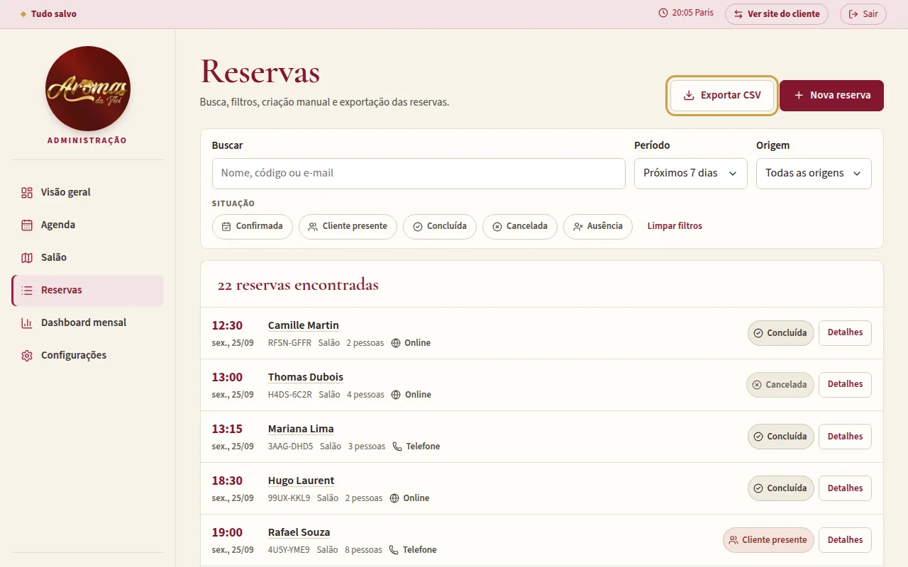
Lista de reservas. Exportar CSV está destacado.
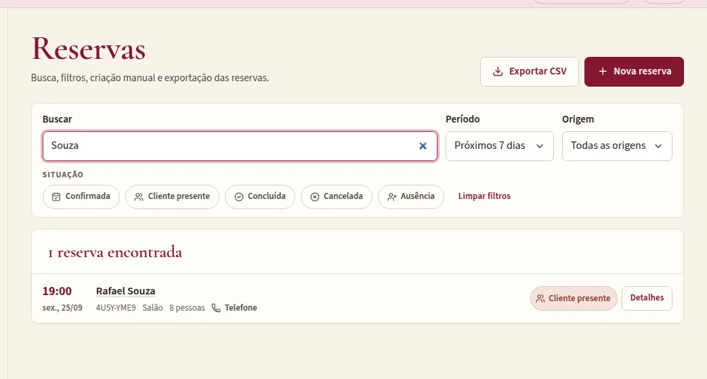
Busca por sobrenome.
Detalhes da reserva
Para que serve
Tudo sobre uma reserva num painel lateral: situação, ações possíveis agora, dados do cliente, e-mails enviados e histórico de tudo o que aconteceu.
O que aparece
No alto: nome, código, data e hora, a situação (ex.: Confirmada) e a origem.
Os botões de ação que valem neste momento. Quando uma ação ainda não vale, uma frase explica (ex.: “Ausência disponível a partir das 20:30”).
Horário previsto (com o fim da arrumação), pessoas, área, contatos, observação e Novidades por e-mail (Aceitou em … / Não aceitou).
E-mails ao cliente: cada e-mail com data, hora e situação.
Histórico: criação, edições (com o antes e o depois), chegada, conclusão, cancelamento.
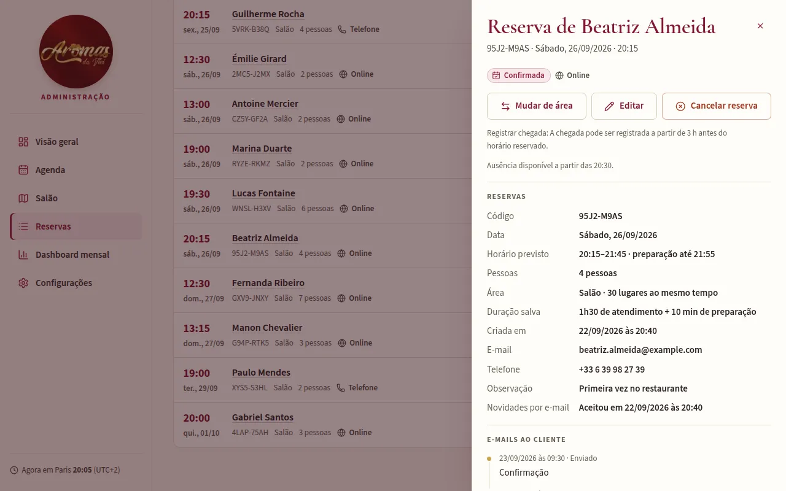
Detalhes de uma reserva futura.
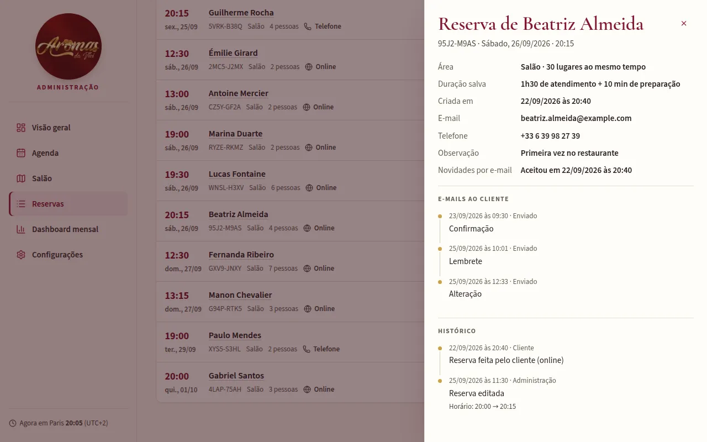
Rolando até o fim: e-mails e histórico. Aqui a equipe mudou o horário de 20:00 para 20:15, e a cliente recebeu o e-mail de Alteração.
Nova reserva (telefone, WhatsApp, TheFork, balcão)
Para que serve
Registrar uma reserva que não veio pelo site. Assim o site passa a saber que aqueles lugares estão ocupados.
Como usar
Toque em Nova reserva.
Data (dd/mm/aaaa), Horário de início, Pessoas.
Área: deixe Automática (primeira área com lugares), ou escolha Salão ou Terraço. Cada opção mostra quantos lugares estão livres.
Origem: Telefone (use também para WhatsApp e TheFork) ou Presencial.
Atendimento (min) e Preparação (min) já vêm com 90 e 10. Só mude se o grupo combinou algo diferente.
Nome do cliente, e se tiver, E-mail, Telefone e Observação.
Toque em Criar reserva. A reserva abre com a mensagem “Reserva … criada.”
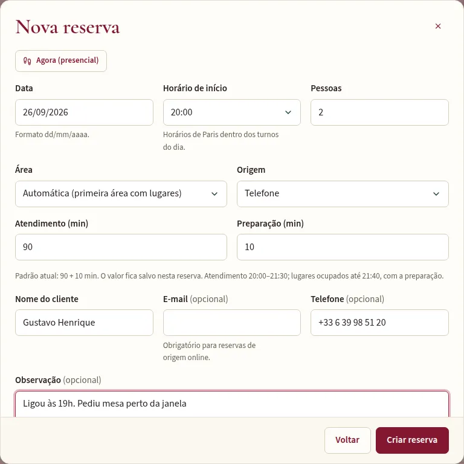
Formulário preenchido.
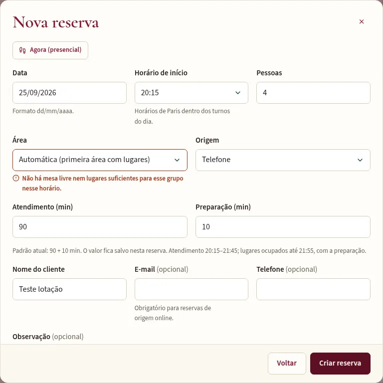
Sem lugar no horário: o sistema recusa e explica.
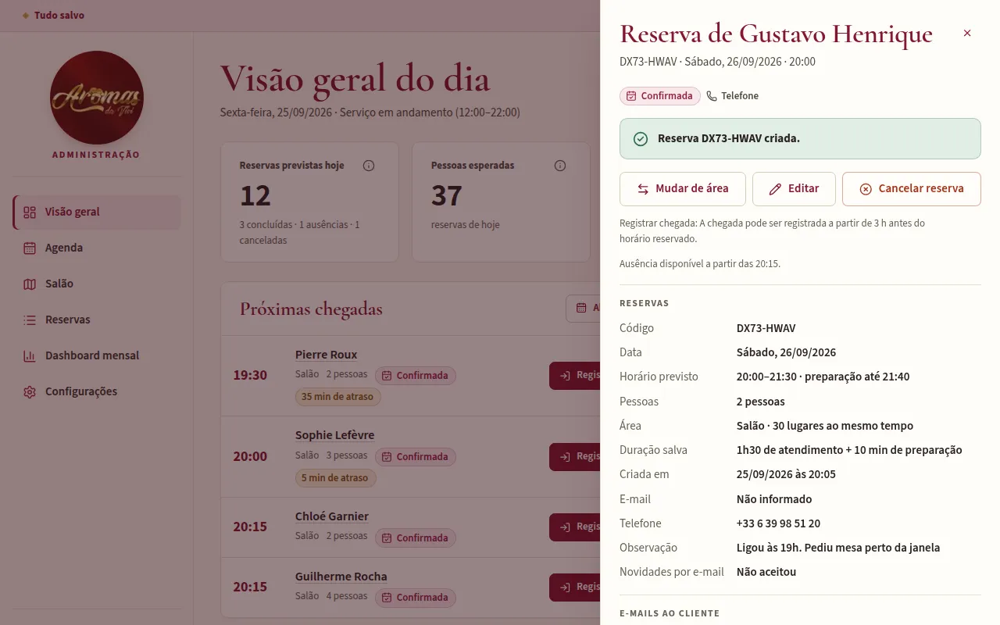
Reserva criada, já com o código.
Exemplo
Um senhor liga às 19h pedindo mesa para dois no sábado às 20h. A atendente cria a reserva com origem Telefone, anota “Pediu mesa perto da janela” e lê o código para ele. Como ele não deu e-mail, não recebe e-mail; a reserva vale do mesmo jeito.
TheFork e outras plataformas: reservas que chegam por fora não aparecem aqui sozinhas. Registre cada uma com Nova reserva assim que chegar, para o site não vender os mesmos lugares.
Cliente sem reserva
Para que serve
Registrar quem chega na porta, para os lugares contarem na lotação.
Como usar
Toque em Cliente sem reserva (Visão geral ou Salão). A origem já vem como Presencial.
Toque em Agora (presencial) para preencher o horário de agora.
Preencha Pessoas e o nome e toque em Criar reserva.
Na reserva que abre, toque em Registrar chegada.
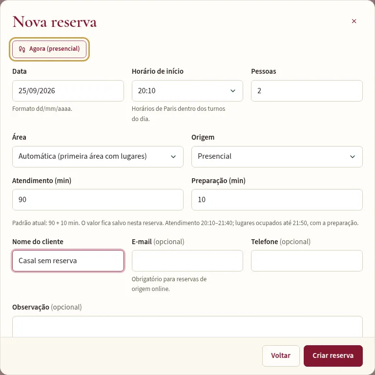
O botão Agora (presencial) preenche data e horário.
Ações do atendimento
Toda ação pede uma confirmação antes. Nada acontece sozinho: o sistema nunca conclui, move ou marca ausência por conta própria.
Registrar chegada
Quando o grupo senta. Pode ser feito a partir de 3 horas antes do horário, se houver lugar desde agora até o fim previsto. A reserva vira Cliente presente.
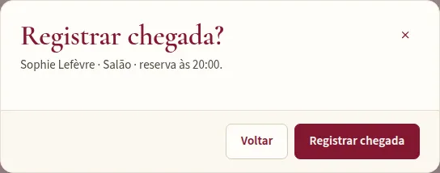
Confirmação da chegada.
Concluir atendimento
Quando o grupo vai embora. Os lugares ficam em arrumação por 10 minutos (no sistema, “preparação”) e depois voltam a ficar livres sozinhos.
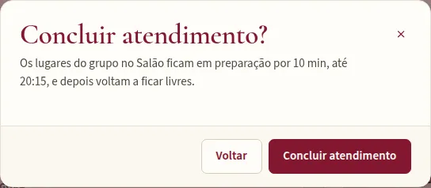
Confirmação da conclusão.
Encerrar ou estender a arrumação
Concluir preparação → Liberar lugares agora: a mesa já está pronta antes dos 10 minutos.
Estender preparação (nos detalhes da reserva): precisa de mais tempo. Escolha os Minutos adicionais e escreva o Motivo (fica no histórico).
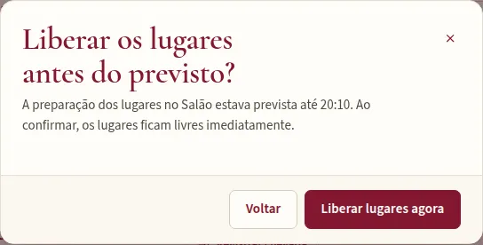
Liberar antes do previsto.
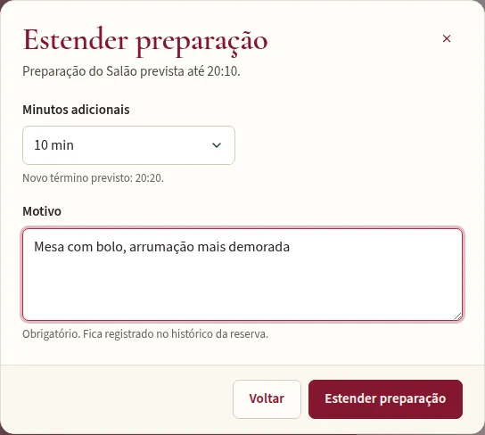
Estender a arrumação.
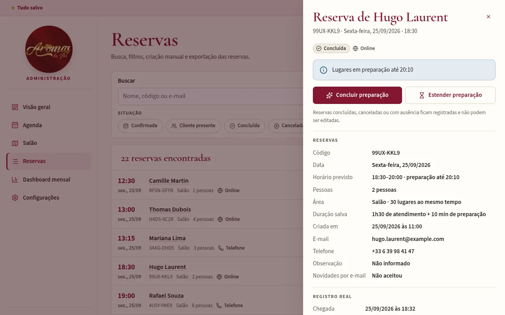
Reserva concluída com os lugares ainda em arrumação.
Marcar ausência
Aparece 15 minutos depois do horário (a tolerância). Libera os lugares e registra a ausência, que conta no Dashboard mensal.
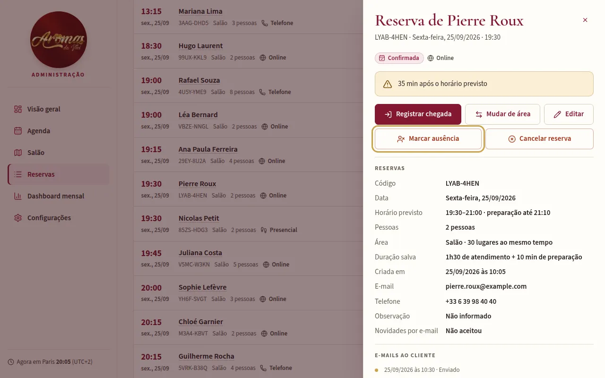
35 minutos de atraso: Marcar ausência já está disponível.
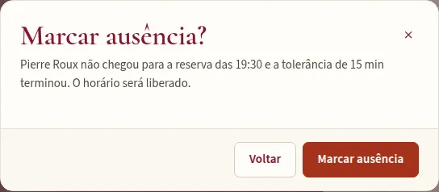
Confirmação.
Cancelar reserva
A Justificativa é obrigatória e fica só no histórico. Se a reserva tem e-mail e ainda é futura, o cliente recebe o e-mail de cancelamento, sem a justificativa.
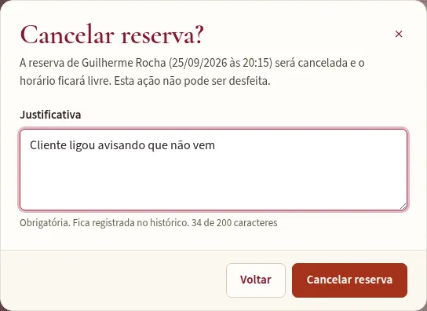
Cancelamento pela equipe.
Mudar de área
Passa a reserva do Salão para o Terraço ou o contrário. A janela mostra quantos lugares a outra área tem livres durante todo o período do grupo.
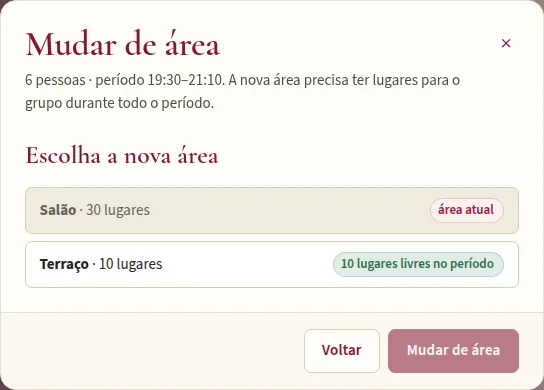
Escolha da nova área.
Editar
Muda data, horário, pessoas, área, contatos e observação. Se mudar dia, horário ou pessoas de uma reserva com e-mail, o cliente recebe o e-mail de Alteração. Com o cliente já sentado, data, horário e durações ficam travados. Reservas concluídas, canceladas ou com ausência não podem mais ser editadas.
Edição de uma reserva.
Bloquear uma área
Para que serve
Fechar o Terraço ou o Salão por um período (chuva, obra, evento), sem fechar o restaurante.
Como usar
Configurações → Bloqueios manuais (ou Bloquear esta área na tela Salão).
Escolha a Área, Data de início, Hora de início, Data de fim, Hora de fim e o Motivo.
Toque em Criar bloqueio. Ele aparece em Bloqueios em andamento e futuros como Em andamento ou Agendado.
Para desfazer: Remover (bloqueio futuro) ou Encerrar agora (bloqueio em andamento).
Bloqueio do Terraço preenchido.Lista de bloqueios com Encerrar agora e Remover.
Tocando no bloqueio na Agenda ou no Salão.
Exemplo
Às 17h começa a chover. A equipe bloqueia o Terraço das 17:15 às 22:00 com o motivo “Chuva”. O site para de oferecer horários que dependiam do Terraço. Às 20h o tempo abre: Encerrar agora, e os 10 lugares voltam.
Dashboard mensal
Para que serve
Ver como foi (ou como está sendo) o mês, a partir das reservas registradas.
Setembro de 2026. Escolha o mês pelas setas ou pela lista.
Reservas recebidas: criadas no mês (pela data em que foram feitas).
Reservas previstas e Pessoas previstas: com atendimento no mês.
Pessoas atendidas: só as reservas concluídas. Por isso vale concluir cada atendimento.
Cancelamentos e Ausências.
Ocupação planejada e Ocupação realizada: percentuais de uso do tempo disponível. Use como tendência entre meses.
Gráficos: Tendência diária, Reservas por dia da semana, Horários mais procurados. Ver tabela mostra os números.
Configurações
Seis seções, com atalhos no topo da página. Mudanças valem para reservas novas; as reservas já feitas guardam a duração com que foram criadas.
Regras de reserva
Duração, arrumação, grade de horários, antecedência, janela, tolerância, prazo de cancelamento, máximo de pessoas online e a caixa Telefone obrigatório nas reservas online. Toque em Salvar regras. Os valores atuais estão na tabela de regras.
Com a caixa marcada, o site exige telefone. Reservas criadas pela equipe continuam com telefone opcional.
Funcionamento semanal
Para cada dia, marque Serviço aberto e escolha Início e Fim. Segundo turno aberto fica desmarcado, porque o restaurante trabalha em serviço contínuo. Toque em Salvar funcionamento. A mudança vale a partir de hoje.
Segunda fechada; terça a domingo 12:00–22:00.
Fechamentos e datas especiais
Em Fechar dias, preencha De, Até (inclusive), o Motivo (interno) e, se quiser, a Mensagem aos clientes em francês, português e inglês.
Toque em Fechar dias.
Se houver reservas nesses dias, abre a janela Há reservas nesses dias, com telefone e e-mail de cada cliente. Toque em Voltar para resolver uma a uma, ou em Cancelar estas reservas e fechar. Nesse caso cada cliente recebe o e-mail de cancelamento; ligue também, se puder.
Em Próximos fechamentos, Reabrir desfaz um fechamento.
Em Feriados na França (próximos 90 dias), Fechar este dia fecha um feriado com um toque.
Mais abaixo, Horário especial numa data muda o horário de um único dia (ex.: fechar às 18h num domingo). Toque em Adicionar exceção.
Fechando um dia para evento privado.Aviso de reservas afetadas.
Próximos fechamentos.Reabrir pede confirmação.
Feriados franceses dos próximos 90 dias.
Exemplo
Vivi decide tirar férias de terça 06/10 a domingo 11/10. Ela fecha os dias com o motivo “Férias” e escreve “Congés annuels — à très bientôt !”, “Férias da equipe — até breve!” e “Annual holidays — see you soon!”. Na mesma hora, o site mostra o aviso em cada idioma e informa que o restaurante volta terça 13/10 às 12:00.
Mesas e áreas
Capacidade de cada área, em pessoas ao mesmo tempo, e a caixa Ativa. Hoje: Salão 30, Terraço 10. Toque em Salvar áreas. Se reduzir a capacidade e houver reservas que não caibam, o sistema lista quais resolver antes.
Dados
Mostra que tudo está salvo no servidor e o total de reservas. Exportar dados (JSON) baixa uma cópia completa, útil como cópia de segurança antes de grandes mudanças. O servidor também guarda uma cópia a cada alteração.
Tudo salvo / Sem conexão
Para que serve
No canto superior esquerdo, o painel diz se as mudanças já chegaram ao servidor: Salvando… e depois Tudo salvo. Outros aparelhos recebem as novidades em até 20 segundos.
Sem internet: a ação aparece na tela, mas fica pendente até a conexão voltar.
Não feche a página enquanto aparecer “Sem conexão”. Se duas pessoas mexerem na mesma reserva ao mesmo tempo, o painel refaz a ação sobre a versão mais nova ou avisa que ela não faz mais sentido (ex.: reserva já cancelada).
No celular
No celular, o menu fica em botões no topo (deslize para o lado para ver todos) e a Agenda abre em lista. Dica: adicione o painel à tela inicial para abrir como um aplicativo (veja Dicas).
Visão geral.Agenda: filtros.Agenda: lista com ações.
Como a lotação funciona
O sistema não escolhe mesas. Ele conta pessoas em cada área, e a equipe junta e arruma as mesas conforme as reservas do dia.
Salão: até 30 pessoas ao mesmo tempo. Terraço: até 10. Várias reservas dividem a área enquanto a soma couber.
Cada reserva ocupa os lugares por 1h30 de atendimento + 10 minutos de arrumação, ou seja, 1h40.
Um horário só aparece se o grupo couber durante toda a 1h40, não só no minuto de chegada.
O sistema tenta primeiro o Salão e depois o Terraço.
Quem está sentado continua contando, mesmo depois do horário previsto, até alguém tocar em Concluir atendimento.
Cancelamentos e ausências liberam os lugares na hora.
Atendimento 1h30
+10 min
19:00 chegada20:30 fim previsto20:40 lugares livres
Por que um horário não aparece no site
A área não tem lugar para o grupo em algum momento da 1h40.
O horário não cabe antes de 22:00 (a última reserva é às 20:15).
Faltam menos de 30 minutos para o horário.
O dia está fechado (segunda, férias, feriado fechado) ou a área está bloqueada.
A data está além de 60 dias.
O grupo tem mais de 8 pessoas.
Exemplo
Às 20:15 de sexta, o Salão tem 30 pessoas previstas. Um casal tenta reservar online para 20:15 e o horário não aparece. Às 20:40 o grupo de 8 do aniversário libera os lugares, e a partir desse ponto o site volta a oferecer horários, se ainda couberem até 22:00.
Regras em vigor
Regra
Valor atual
Onde mudar
Dias e horários
Ter–Dom 12:00–22:00
Configurações → Funcionamento semanal
Segunda-feira
Fechado
Configurações → Funcionamento semanal
Capacidade do Salão
30 pessoas
Configurações → Mesas e áreas
Capacidade do Terraço
10 pessoas
Configurações → Mesas e áreas
Duração do atendimento
90 min
Configurações → Regras de reserva
Preparação da mesa (arrumação)
10 min
Configurações → Regras de reserva
Grade de horários
15 min
Configurações → Regras de reserva
Última reserva
20:15
Resulta do horário de fechamento e da duração
Máximo de pessoas online
8
Configurações → Regras de reserva
Grupos maiores
WhatsApp +33 7 71 85 74 03
Pedir ao Kevin (fica no código do site)
Telefone obrigatório online
Sim
Configurações → Regras de reserva
Antecedência mínima online
30 min
Configurações → Regras de reserva
Janela de reservas
60 dias
Configurações → Regras de reserva
Cancelamento pelo cliente
até 2 h antes
Configurações → Regras de reserva (120 min)
Tolerância de chegada
15 min
Configurações → Regras de reserva
Fechamentos programados
25/12/2026 e 01/01/2027
Configurações → Fechamentos e datas especiais
Lembrete por e-mail
10:00 da véspera
Fixo
O que o cliente recebe
Os e-mails são enviados pelo Brevo, no idioma em que o cliente reservou (francês, português ou inglês). Reservas criadas pela equipe saem em francês. Só recebe quem tem e-mail na reserva.
E-mail
Quando
Confirmação
Logo depois de reservar pelo site, ou quando a equipe cria uma reserva com e-mail.
Alteração
Quando a equipe muda dia, horário ou número de pessoas.
Cancelamento
Quando o cliente ou a equipe cancela. A justificativa interna nunca é enviada.
Lembrete
Às 10:00 da véspera. Quem reserva depois disso, ou para o mesmo dia, não recebe.
Todos trazem o código, data, horário, pessoas, endereço com mapa, o botão para consultar ou cancelar, o prazo de cancelamento e o WhatsApp. Os e-mails nunca atrasam a reserva: se o envio falhar, o sistema tenta de novo até 5 vezes.
Confirmação (português).Lembrete da véspera.Alteração.Cancelamento.
A mesma confirmação em francês, no celular.
Dicas e cuidados
Não compartilhe a senha da equipe por mensagem em grupo nem anote em lugar visível. Quando alguém sai da equipe, peça ao Kevin para trocar a senha.
Toque em Sair em aparelhos que não são do restaurante.
Privacidade (RGPD): nomes, telefones e e-mails só aparecem no painel, com senha. O site dos clientes nunca mostra dados de outras pessoas. Não escreva dados de saúde ou de pagamento na observação. Se um cliente pedir para apagar os dados, avise o Kevin.
Novidades por e-mail: só envie newsletter a quem marcou a caixa (coluna Aceita novidades = Sim no CSV).
TheFork e outras plataformas: registre cada reserva com Nova reserva assim que chegar. Senão o site pode vender os mesmos lugares.
Conclua cada atendimento quando o grupo sai. Assim os lugares voltam para o site e o Dashboard conta as pessoas atendidas.
Reservas antigas ainda “Confirmadas” aparecem nos alertas como pendentes. Marque ausência ou cancele com justificativa.
Adicionar à tela inicial: no iPhone, abra o painel no Safari, toque em Compartilhar e em Adicionar à Tela de Início. No Android, no Chrome, toque nos três pontos e em Adicionar à tela inicial.
Antes de grandes mudanças (capacidade, horários), exporte uma cópia em Configurações → Dados → Exportar dados (JSON).
Glossário
Confirmada
Reserva feita, cliente ainda não chegou.
Cliente presente
Chegada registrada; o grupo está sentado.
Concluída
O grupo foi embora e o atendimento foi concluído.
Cancelada
Cancelada pelo cliente (no site) ou pela equipe (com justificativa). Não ocupa lugar.
Ausência
O cliente não veio e a equipe marcou ausência depois da tolerância de 15 minutos. Não ocupa lugar.
Arrumação
Os 10 minutos depois de cada atendimento para arrumar a mesa. No painel aparece como “preparação”.
Bloqueio
Período em que uma área inteira fica fechada (ex.: Terraço por chuva), com motivo.
Área
Salão ou Terraço. As reservas são controladas por lugares em cada área, não por mesa.
Lotação
Quantas pessoas estão (ou estarão) numa área ao mesmo tempo, comparado com a capacidade: 30 no Salão, 10 no Terraço.
Previsão
Modo da tela Salão que mostra a lotação esperada num dia e horário futuros, calculada pelas reservas e bloqueios.
Tolerância
Os 15 minutos de espera depois do horário antes de poder marcar ausência.
Código
Identificação da reserva no formato XXXX-XXXX, usada pelo cliente para consultar ou cancelar.
Origem
Como a reserva chegou: Online (site), Telefone ou Presencial.
Perguntas frequentes
Posso aceitar mais de 30 pessoas no Salão?
Não pelo sistema: ele recusa reservas acima da capacidade em qualquer momento. Se o salão comportar mais num dia especial, mude a capacidade em Configurações → Mesas e áreas e volte ao valor normal depois.
O cliente sentou numa mesa de fora mas a reserva está no Salão. Faz diferença?
Faz para a lotação. Use Mudar de área para refletir onde ele está de verdade, assim o site calcula certo os lugares livres.
O grupo chegou 40 minutos antes. Dá para registrar a chegada?
Sim, a partir de 3 horas antes, desde que a área tenha lugar para o grupo desde agora até o fim previsto. Se não tiver, o painel explica e sugere mudar de área.
O grupo ficou além de 1h30. O que acontece?
Nada muda sozinho. A reserva continua como Cliente presente e ocupa os lugares. Os alertas avisam se isso pode apertar as próximas chegadas.
Registrei a chegada da pessoa errada. Como desfaço?
O painel não tem botão para desfazer uma chegada. Peça ajuda ao Kevin. Para evitar, confira o nome na janela de confirmação antes de tocar em Registrar chegada.
O cliente perdeu o código.
Busque em Reservas pelo nome ou e-mail e passe o código por telefone ou WhatsApp.
Mudei a duração nas regras. As reservas antigas mudam?
Não. Cada reserva guarda a duração com que foi criada. Só as novas usam o valor novo.
Posso usar o painel em dois aparelhos ao mesmo tempo?
Sim. Todos os aparelhos veem os mesmos dados e se atualizam em até 20 segundos.
O e-mail diz que o cliente pode cancelar até 2 horas antes. E depois disso?
O site bloqueia o cancelamento e pede que ele fale com o restaurante. A equipe cancela pelo painel, com justificativa.
Um feriado francês vai cair num dia aberto. Preciso fazer algo?
Só se quiser fechar. Em Configurações → Fechamentos e datas especiais, os feriados dos próximos 90 dias aparecem com o botão Fechar este dia. Se não fizer nada, o restaurante abre normalmente.